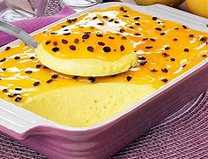

Mousse De Maracujaa
Ingredientes (8 porções)
- 1 lata de leite condensado
- 1 lata de creme de leite
- 1 lata (a mesma medida da lata de leite condensado) de suco de maracujá
Modo de preparo : 10min
- 1 Bata todos os ingredientes no liquidificador.
- 2 Depois, despeje o conteúdo em uma forma ou tigela e leve à geladeira.
- Para decorar, adicione sementes de maracujá sobre a mousse.
